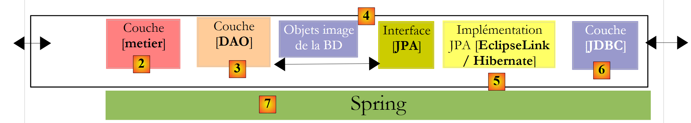

2. Laaggebaseerde architectuur van een Java-toepassing
Een Java-applicatie wordt vaak opgedeeld in lagen, die elk een duidelijk omschreven rol hebben. Laten we eens kijken naar een veelvoorkomende architectuur, namelijk de drielaagse architectuur:
 |
- De laag [1], hier [ui] (User Interface) genoemd, is de laag die met de gebruiker communiceert via een grafische Swing-interface, een console-interface of een webinterface. Haar rol is om gegevens van de gebruiker door te geven aan de laag [2] of om gegevens die door de laag [2] worden aangeleverd, aan de gebruiker te presenteren.
- De laag [2], hier [metier] genoemd, is de laag die de zogenaamde bedrijfsregels, c.a.d, toepast. de specifieke logica van de applicatie, zonder zich af te vragen waar de gegevens vandaan komen die eraan worden doorgegeven, noch waar de resultaten naartoe gaan die ze produceert.
- de laag [3], hier [DAO] (Data Access Object) genoemd, is de laag die de laag [2] voorziet van vooraf opgeslagen gegevens (bestanden, databases, ...) en die bepaalde resultaten opslaat die door de laag [2] worden geleverd.
Er zijn verschillende mogelijkheden om de laag [DAO] te implementeren. Laten we er een paar bekijken:
 |
De hierboven genoemde laag [JDBC] is de standaardlaag die in Java wordt gebruikt om toegang te krijgen tot databases. Deze laag scheidt de laag [DAO] van de laag SGBD, die de database beheert. Theoretisch is het mogelijk om van SGBD te wisselen zonder de code van de laag [DAO] te wijzigen. Ondanks dit voordeel heeft de API JDBC enkele nadelen:
- alle bewerkingen op de SGBD kunnen de gecontroleerde uitzondering (checked) SQLException activeren. Dit dwingt de aanroepende code (hier de laag [DAO]) om deze te omringen met try/catch-blokken, waardoor de code vrij omvangrijk wordt.
- de laag [DAO] is niet volledig onafhankelijk van de laag SGBD. Deze hebben bijvoorbeeld eigen methoden voor het automatisch genereren van primaire sleutelwaarden die de laag [DAO] niet kan negeren. Bij het invoegen van een record:
- met Oracle moet de laag [DAO] eerst een waarde voor de primaire sleutel van het record ophalen en dit vervolgens invoegen.
- bij SQL Server voegt de laag [DAO] het record in, waaraan automatisch een primaire sleutelwaarde wordt toegekend door de laag SGBD; deze waarde wordt vervolgens doorgegeven aan de laag [DAO].
Deze verschillen kunnen worden weggewerkt door gebruik te maken van opgeslagen procedures. In het vorige voorbeeld roept de laag [DAO] een opgeslagen procedure aan in Oracle of SQL Server, die rekening houdt met de specifieke kenmerken van de SGBD. Deze worden verborgen voor de laag [DAO]. Hoewel het wijzigen van SGBD niet betekent dat de laag [DAO] herschreven moet worden, houdt het wel in dat de opgeslagen procedures herschreven moeten worden. Dit hoeft niet als een onoverkomelijk probleem te worden beschouwd.
Er zijn talrijke pogingen ondernomen om de laag [DAO] te isoleren van de propriëtaire aspecten van SGBD. Een oplossing die de afgelopen jaren op dit gebied zeer succesvol is gebleken, is die van Hibernate:
 |
De [Hibernate]-laag wordt geplaatst tussen de door de ontwikkelaar geschreven [DAO]-laag en de [JDBC]-laag. Hibernate is een ORM (Object Relational Mapper), een tool die een brug slaat tussen de relationele wereld van databases en die van de objecten die door Java worden beheerd. De ontwikkelaar van de [DAO]-laag ziet noch de [JDBC]-laag, noch de tabellen van de database waarvan hij de inhoud wil benutten. Hij ziet alleen het objectbeeld van de database, een objectbeeld dat wordt geleverd door de [Hibernate]-laag. De koppeling tussen de tabellen van de database en de objecten die door de laag [DAO] worden beheerd, wordt voornamelijk op twee manieren tot stand gebracht:
- via configuratiebestanden van het type XML
- via Java-annotaties in de code, een techniek die pas beschikbaar is sinds JDK 1.5
De [Hibernate]-laag is een abstractielaag die zo transparant mogelijk wil zijn. Het streefdoel is dat de ontwikkelaar van de [DAO]-laag volledig kan negeren dat hij met een database werkt. Dit is haalbaar als hij niet zelf de configuratie schrijft die de brug vormt tussen de relationele en de objectwereld. De configuratie van deze brug is vrij delicaat en vereist enige ervaring.
De objectlaag [4], die een afspiegeling is van de BD, wordt de „persistentiecontext“ genoemd. Een [DAO]-laag die op Hibernate is gebaseerd, voert persistentieacties (CRUD: create – read – update – delete) uit op de objecten van de persistentiecontext, acties die door Hibernate worden omgezet in SQL-opdrachten die worden uitgevoerd door de JDBC-laag. Voor acties waarbij de database wordt opgevraagd (de SQL Select), biedt Hibernate de ontwikkelaar een taal (Hibernate Query Language) om de persistentiecontext te doorzoeken, en niet de database zelf.
Hibernate is populair, maar moeilijk onder de knie te krijgen. De leercurve, die vaak als eenvoudig wordt voorgesteld, is in werkelijkheid behoorlijk steil. Zodra je te maken hebt met een database met tabellen die één-op-veel- of veel-op-veel-relaties hebben, is het configureren van de relationeel-naar-object-brug niet iets voor de eerste de beste beginner. Configuratiefouten kunnen leiden tot slecht presterende applicaties.
Gezien het succes van de ORM-producten, heeft Sun, de maker van Java, besloten om een ORM-laag te standaardiseren via een specificatie genaamd JPA (Java Persistence API), die tegelijk met Java 5 verscheen. De specificatie JPA is door verschillende producten geïmplementeerd: Hibernate, Toplink, EclipseLink, OpenJpa, ... Met JPA ziet de architectuur er als volgt uit:
 |
De laag [DAO] communiceert nu met de specificatie JPA, een reeks interfaces. De ontwikkelaar heeft hierdoor gewonnen aan standaardisatie. Vroeger moest hij, als hij zijn laag ORM wijzigde, ook zijn laag [DAO] aanpassen, die was geschreven om te communiceren met een specifieke ORM. Nu schrijft hij een laag [DAO] die zal communiceren met een laag JPA. Ongeacht welk product deze laag implementeert, blijft de interface van de laag JPA die aan de laag [DAO] wordt aangeboden, hetzelfde.
In dit document gebruiken we een laag [DAO] die is gebaseerd op een laag JPA/Hibernate of JPA/EclipseLink. Daarnaast zullen we het Spring 2.8-framework gebruiken om deze lagen aan elkaar te koppelen.
 |
Het grote voordeel van Spring is dat het mogelijk maakt om de lagen via configuratie te koppelen en niet in de code. Als de implementatie JPA / Hibernate moet worden vervangen door een Hibernate-implementatie zonder JPA, bijvoorbeeld omdat de applicatie draait in een JDK 1.4-omgeving die JPA niet ondersteunt, deze wijziging in de implementatie van de [DAO]-laag heeft geen invloed op de code van de [métier]-laag. Alleen het Spring-configuratiebestand dat de lagen met elkaar verbindt, moet worden aangepast.
Met Java EE 5 bestaat er een andere oplossing: de lagen [metier] en [DAO] implementeren met EJB3 (Enterprise Java Bean versie 3):
 |
We zullen zien dat deze oplossing niet veel verschilt van die waarbij Spring wordt gebruikt. De Java-omgeving EE5 is beschikbaar binnen zogenaamde applicatieservers zoals Sun Application Server 9.x (Glassfish), JBoss Application Server, Oracle Container for Java (OC4J), ... Een applicatieserver is in wezen een webserver. Er bestaan ook zogenaamde „stand-alone“ omgevingen, EE 5, c.a.d. die buiten een applicatieserver kunnen worden gebruikt. Dit is het geval bij JBoss, EJB3 of OpenEJB.
In een EE5-omgeving worden de lagen geïmplementeerd door objecten die EJB (Enterprise Java Bean) worden genoemd. In eerdere versies van EE stonden de EJB (EJB 2.x) bekend als moeilijk te implementeren, te testen en soms weinig performant. Er wordt onderscheid gemaakt tussen de EJB2.x „entity” en de EJB2.x „session”. Kort gezegd is een EJB2.x "entity" de weergave van een rij in een databasetabel en een EJB2.x "session" een object dat wordt gebruikt om de [metier]-lagen te implementeren, [DAO] van een meerlaagse architectuur te implementeren. Een van de belangrijkste punten van kritiek op de met EJB geïmplementeerde lagen is dat ze alleen bruikbaar zijn binnen EJB-containers, een dienst die wordt geleverd door de EE-omgeving. Deze omgeving, die complexer is om te implementeren dan een SE-omgeving (Standard Edition), kan de ontwikkelaar ervan weerhouden om regelmatig tests uit te voeren. Toch bestaan er Java-ontwikkelomgevingen die het gebruik van een applicatieserver vergemakkelijken door de implementatie van EJB op de server te automatiseren: Eclipse, NetBeans, JDeveloper, IntelliJ en IDEA. We zullen hier NetBeans 6.8 en de GlassFish-applicatieserver v3 gebruiken.
Het Spring-framework is ontstaan als reactie op de complexiteit van EJB2. Spring biedt in een SE-omgeving een groot aantal diensten die doorgaans door EE-omgevingen worden geleverd. Zo biedt Spring in het onderdeel „Gegevenspersistentie“ de verbindingspools en transactiebeheerders die applicaties nodig hebben. De opkomst van Spring heeft de cultuur van unit-tests bevorderd, die in de SE-context eenvoudiger te implementeren zijn geworden dan in de EE-context. Spring maakt het mogelijk de lagen van een applicatie te implementeren met behulp van klassieke Java-objecten (POJO, Plain Old/Ordinary Java Object), waardoor deze in een andere context kunnen worden hergebruikt. Ten slotte integreert het op vrij transparante wijze talrijke tools van derden, met name persistentietools zoals Hibernate, EclipseLink, Ibatis, ...
Java EE5 is ontworpen om de tekortkomingen van de EJB2-specificatie te verhelpen. De EJB 2.x zijn de EJB3 geworden. Dit zijn POJOs-objecten die zijn voorzien van annotaties waardoor ze speciale objecten worden wanneer ze zich in een EJB3-container bevinden. Binnen deze container kan de EJB3 gebruikmaken van de diensten van de container (verbindingspool, transactiebeheerder, ...). Buiten de container EJB3 wordt het EJB3-object een normaal Java-object. De bijbehorende annotaties EJB worden genegeerd.
Hierboven hebben we Spring en een EJB3-container weergegeven als mogelijke infrastructuur (framework) voor onze meerlaagse architectuur. Deze infrastructuur levert de diensten die we nodig hebben: een verbindingspool en een transactiebeheerder.
- Met Spring worden de lagen geïmplementeerd met POJOs. Deze krijgen toegang tot de diensten van Spring (verbindingspool, transactiebeheerder) door middel van afhankelijkheidsinjectie in deze POJOs: tijdens het aanmaken ervan injecteert Spring er verwijzingen in naar de diensten die ze nodig zullen hebben.
- Met de EJB3-container worden de lagen geïmplementeerd met EJB. Een gelaagde architectuur die is geïmplementeerd met EJB3 verschilt nauwelijks van die welke is geïmplementeerd met POJO die door Spring worden geïnstantieerd. We zullen veel overeenkomsten aantreffen.
- Tot slot zullen we een voorbeeld van een meerlaagse webapplicatie presenteren:
 |